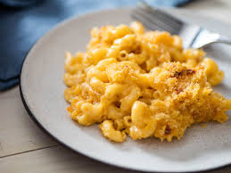

Pasta

Description
Indulge in the ultimate comfort food with classic macaroni and cheese, a beloved dish that combines tender macaroni pasta with a luscious, creamy cheese sauce. Begin by boiling macaroni until just tender, then prepare a velvety cheese sauce by melting butter in a saucepan and whisking in flour to create a roux. Slowly pour in warm milk, stirring constantly until the mixture thickens, then add generous amounts of shredded sharp cheddar cheese, stirring until smooth and luxurious. Season with a pinch of mustard powder, nutmeg, and a dash of Worcestershire sauce for depth of flavor. Combine the cheesy sauce with the cooked macaroni, ensuring every noodle is coated in the creamy goodness. Transfer the mixture to a baking dish, top with a final sprinkling of cheese and breadcrumbs for a crispy crust, and bake until golden and bubbling. The result is a mouthwatering symphony of cheesy goodness that will warm your soul with every bite. Enjoy this classic comfort dish as a side or as the star of the meal, guaranteed to bring joy to everyone around the table.
Ingredients
- 2 cups of elbow macroni
- 4 tablespoons of unsalted butter
- 2 cups of whole milk, warmed
- 3 cups of shredded sharp cheddar cheese
- 1/2 teaspoon mustard powder
- 1/4 teaspoon ground nutmeg
- 1 teaspoon Worcestershire sauce
- Salt and freshly grounded black pepper, to taste
Steps
- Preheat your oven to 350°F (175°C). Grease a baking dish and set aside.
- Cook the macaroni according to package instructions until al dente. Drain and set aside.
- In a large saucepan, melt the butter over medium heat.
- Whisk in the flour and cook for about 1 minute, stirring constantly, to form a roux.
- Gradually pour in the warm milk, whisking constantly to prevent lumps.
- Cook the sauce, stirring frequently, until it thickens and coats the back of a spoon, about 5-7 minutes.
- Stir in the shredded cheddar cheese until melted and smooth.
- Season the cheese sauce with mustard powder, nutmeg, Worcestershire sauce, salt, and pepper, to taste.
- Add the cooked macaroni to the cheese sauce and stir until well combined.
- Transfer the macaroni and cheese mixture to the prepared baking dish.
- Sprinkle the breadcrumbs evenly over the top of the macaroni and cheese.
- Bake in the preheated oven for 20-25 minutes, or until the top is golden brown and the cheese is bubbly.
- Remove from the oven and let cool for a few minutes before serving.
- Enjoy your delicious homemade macaroni and cheese!